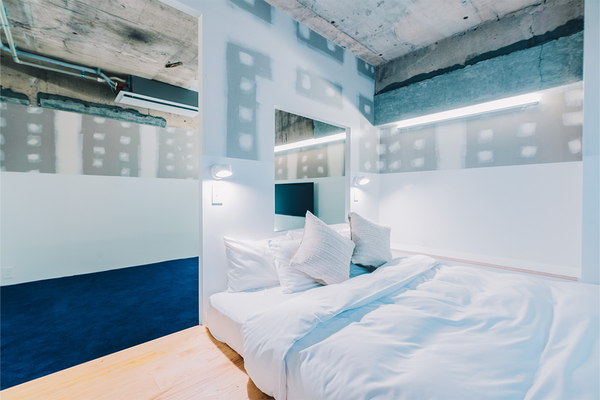
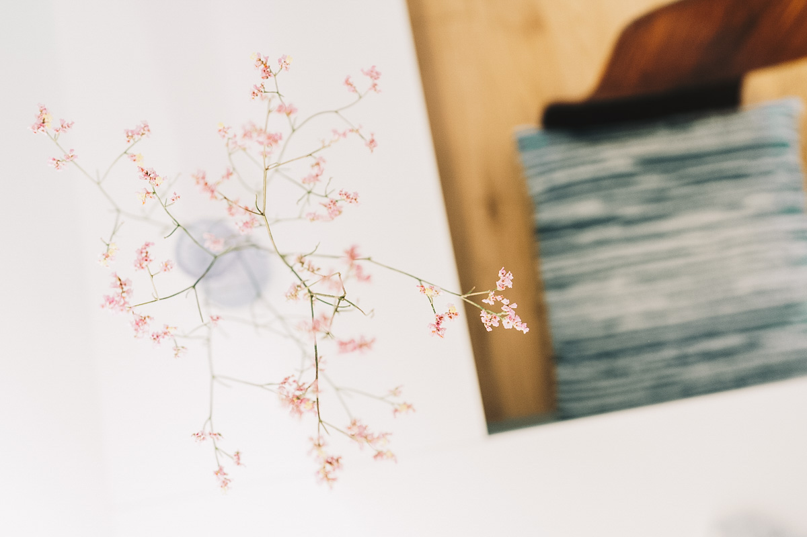
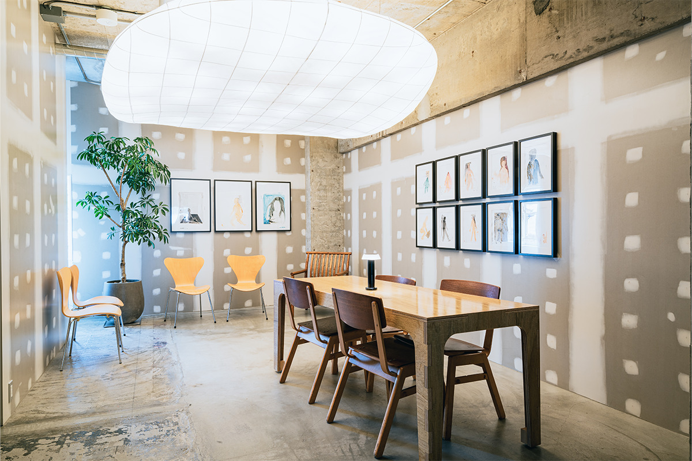
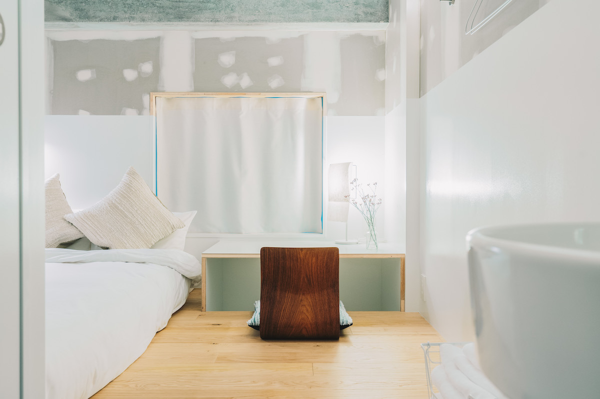
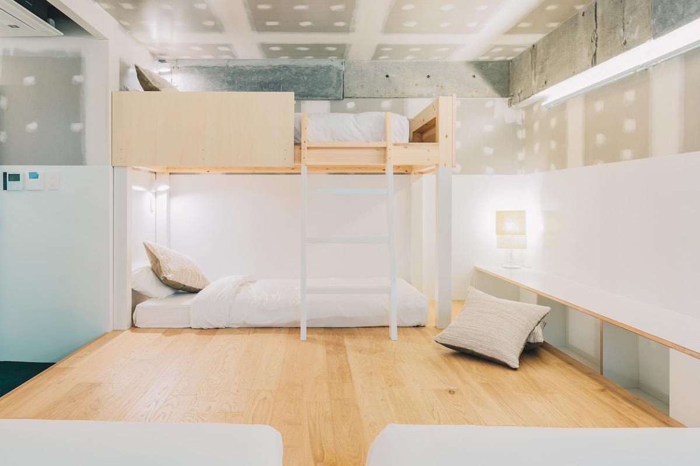
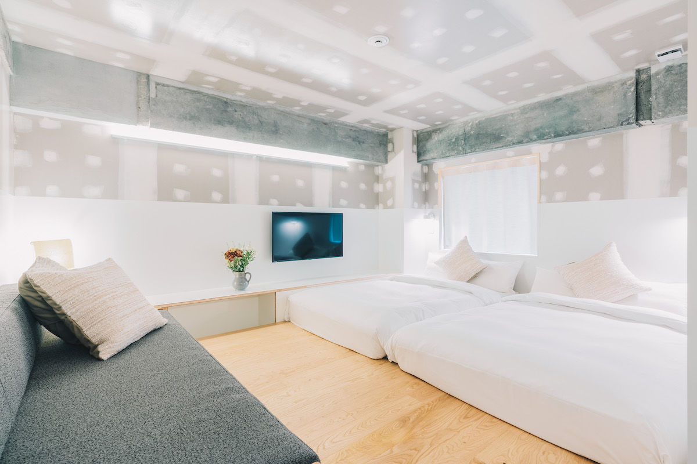
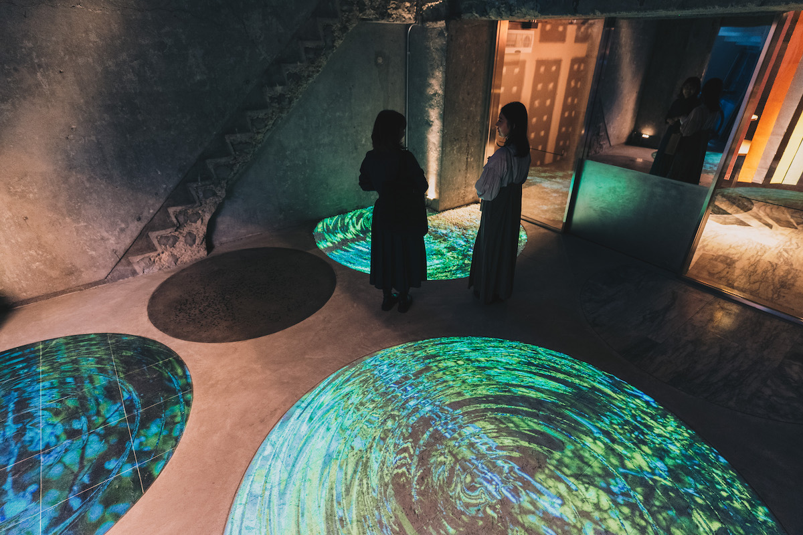
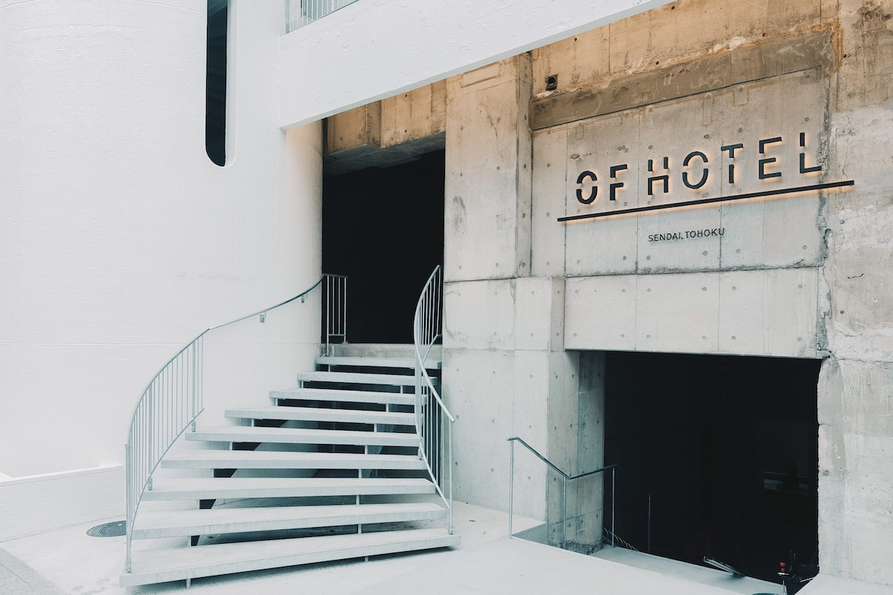

Префектура Мияги · Сендай · отель
OF HOTEL в Сендае: гостиница, где Тохоку чувствуется под ногами и на стенах

OF HOTEL открылся в Сендае 1 июля 2022 года в здании бизнес-отеля, которому тогда было 47 лет. Его задумали как место, где путешественник и местные жители встречаются с ремеслом, искусством и идеями северо-востока Японии.
Идея
Одна пятая Японии
OF HOTEL стоит в квартале Какёин в Сендае. Гостиница работает под девизом «Local Session»: она хочет передать будущему малоизвестные смелые проекты, культуру и историю Тохоку и стать площадкой для новых творческих дел. Проект перестройки старого бизнес-отеля разработала мастерская /360°, которую основал архитектор родом из префектуры Акита. Отель подойдёт и как база для поездок по региону, и для деловой командировки.

Тохоку занимает около пятой части территории Японии, и можно смело сказать, что в нём собрана и пятая часть всего, чем страна привлекательна. Отсюда название: «OF» сложено из первых букв английского «one-fifth», одна пятая. Английское «of», которое, как считается, произошло от ослабленного «off», означает в том числе «из-за, по причине». В название вложено пожелание: ненадолго отойти от повседневности, но не выключиться в режим «off», а получить здесь как можно больше разных впечатлений «of».
Материалы региона здесь повсюду. Пол в холле выложен камнем из префектуры Мияги, сланцем и камнем акиу-иси, а также камнем товада-иси из Акиты. В общих зонах стоит винтажная мебель, в том числе фабрики Tendo Mokko из Ямагаты. В номерах пол из каштана из префектуры Иватэ, а на кроватях подушки в технике сакиори, где ткань ткут из нарезанных полосками старых тканей.
Лаунж
Место для встреч и работы
Сендай один из главных городов Тохоку, и сюда приезжают и из соседних префектур, и со всей страны. Отель рассчитан на людей, которые работают по-новому: в нём удобно заниматься делами, а сама жизнь в отеле будит воображение.

Лаунж на втором этаже открыт для гостей и до заселения, и после выезда. Его задумали как место встреч с местными жителями и людьми творческих профессий: вместе с энтузиастами из разных уголков Тохоку здесь регулярно устраивают события и мастер-классы. В июле 2022 года в лаунже выставлялись работы уроженца Сендая, художника, который много работает в Японии и за рубежом.
Номера
Как дома, только в отеле
Номера здесь спроектированы как продолжение жилого дома. Обувь снимают у порога, и дальше можно расслабиться: в номерах есть ниша токонома и приподнятый настил коагари, как в японской комнате с татами.


Стоит присмотреться и к деталям, которые знакомят с традиционным японским жилищем. Например, к нидзиригути, низкому входу, через который в чайный домик можно попасть только пригнувшись. Всего в отеле 55 номеров 14 типов, для одного гостя и для компании до шести человек, для работы и для отдыха.

Сад из света
Вход, выложенный округлыми камнями, оформлен как сад, который соединяет улицу и здание. На него проецируют цифровую инсталляцию с пейзажами и природой Тохоку. Это стоит увидеть.

Отель, где в каждом углу видны природа, культура и искусство Тохоку, подходит, чтобы и отдохнуть, и найти новые идеи. В 2022 году номер с двуспальной кроватью без питания стоил от 7700 иен за человека с налогом и сервисным сбором.

OF HOTEL
- Адрес
- префектура Мияги, Сендай, район Аоба, Какёин, 1-4-14
- Телефон
- +81 22-748-5772
- Номера
- 55
- Цены / Вход
- номер с двуспальной кроватью, без питания, от 7700 иен за человека с налогом и сервисным сбором
- Сайт
- of-hotel.jp